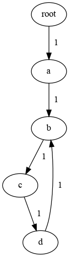

k1lib.callbacks package¶
Submodules¶
callbacks module¶
Bare example of how this module works:
import k1lib
class CbA(k1lib.Callback):
def __init__(self):
super().__init__()
self.initialState = 3
def startBatch(self):
print("startBatch - CbA")
def startPass(self):
print("startPass - CbA")
class CbB(k1lib.Callback):
def startBatch(self):
print("startBatch - CbB")
def endLoss(self):
print("endLoss - CbB")
# initialization
cbs = k1lib.Callbacks()
cbs.append(CbA()).append(CbB())
model = lambda xb: xb + 3
lossF = lambda y, yb: y - yb
# training loop
cbs("startBatch"); xb = 6; yb = 2
cbs("startPass"); y = model(xb); cbs("endPass")
cbs("startLoss"); loss = lossF(y, yb); cbs("endLoss")
cbs("endBatch")
print(cbs.CbA) # can reference the Callback object directly
So, point is, you can define lots of Callback classes that
defines a number of checkpoint functions, like startBatch. Then,
you can create a Callbacks object that includes Callback
objects. When you do cbs("checkpoint"), this will execute
cb.checkpoint() of all the Callback objects.
Pretty much everything here is built upon this. The core training loop
has nothing to do with ML stuff. In fact, it’s just a bunch of
cbs("...") statements. Everything meaningful about the training
loop comes from different Callback classes. Advantage of this is that you
can tack on wildly different functions, have them play nicely with each
other, and remove entire complex functionalities by commenting out a
single line.
-
class
k1lib.callbacks.callbacks.Callback[source]¶ Bases:
objectRepresents a callback. Define specific functions inside to intercept certain parts of the training loop. Can access
k1lib.Learnerlike this:self.l.xb = self.l.xb[None]
This takes x batch of learner, unsqueeze it at the 0 position, then sets the x batch again.
Normally, you will define a subclass of this and define specific intercept functions, but if you want to create a throwaway callback, then do this:
Callback().withCheckpoint("startRun", lambda: print("start running"))
You can use .cls for a list of default Callback classes, for any particular needs.
order
You can also use .order to set the order of execution of the callback. The higher, the later it gets executed. Value suggestions:
7: pre-default runs, like LossLandscape
10: default runs, like DontTrainValid
13: custom mods, like ModifyBatch
15: pre-recording mod
17: recording mods, like Profiler.memory
20: default recordings, like Loss
23: post-default recordings, like ParamFinder
25: guards, like TimeLimit, CancelOnExplosion
Just leave as default (10) if you don’t know what values to choose.
dependsOn
If you’re going to extend this class, you can also specify dependencies like this:
class CbC(k1lib.Callback): def __init__(self): super().__init__() self.dependsOn = {"Loss", "Accuracy"}
This is so that if somewhere,
Losscallback class is temporarily suspended, then CbC will be suspended also, therefore avoiding errors.Suspension
If your Callback is mainly dormant, then you can do something like this:
class CbD(k1lib.Callback): def __init__(self): super().__init__() self.suspended = True def startBatch(self): # these types of methods will only execute # if ``self.suspended = False`` pass def analyze(self): self.suspended = False # do something that sometimes call ``startBatch`` self.suspended = True cbs = k1lib.Callbacks().append(CbD()) # dormant phase: cbs("startBatch") # does not execute CbD.startBatch() # active phase cbs.CbB.analyze() # does execute CbD.startBatch()
So yeah, you can easily make every checkpoint active/dormant by changing a single variable, how convenient. See over
Callbacks.suspend()for more.-
withCheckpoint(checkpoint: str, f: Callable[[k1lib.callbacks.callbacks.Callback], None])[source]¶ Quickly set a checkpoint, for simple, inline-able functions
- Parameters
checkpoint – checkpoints like “startRun”
f – function that takes in the Callback itself
-
pause()¶ Pauses the callback’s main functionality for a while. This is a bit different from
Callbacks.suspend(), in thatCallbacks.suspend()will not call any cb’s checkpoints at all. However, pausing it will only set an internal variablepaused, but all the checkpoints will be called normally.Callbackobjects can then choose to turn off some checkpoints if deemed appropriate.This is kinda a niche functionality, and very few built-in
Callbacks actually use this.
-
class
k1lib.callbacks.callbacks.Timings[source]¶ Bases:
objectList of checkpoint timings. Not intended to be instantiated by the end user. Used within
Callbacks, accessible viaCallbacks.timingsto record time taken to execute a single checkpoint. This is useful for profiling stuff.-
property
state¶
-
property
checkpoints¶ List of all checkpoints encountered
-
property
-
class
k1lib.callbacks.callbacks.Callbacks[source]¶ Bases:
object-
property
l¶ k1lib.Learnerobject. Will be set automatically when you setk1lib.Learner.cbsto thisCallbacks
-
property
cbs¶
-
append(cb: k1lib.callbacks.callbacks.Callback, name: Optional[str] = None)[source]¶ Adds a callback to the collection.
-
__call__(*checkpoints: List[str]) → bool[source]¶ Calls a number of checkpoints one after another. Returns True if any of the checkpoints return anything at all
-
__getitem__(idx: Union[int, str]) → k1lib.callbacks.callbacks.Callback[source]¶
-
__iter__() → Iterator[k1lib.callbacks.callbacks.Callback][source]¶
-
withBasics()[source]¶ Adds a bunch of very basic Callbacks that’s needed for everything. Also includes Callbacks that are not necessary, but don’t slow things down
-
withAdvanced()[source]¶ Adds advanced Callbacks that do fancy stuff, but may slow things down if not configured specifically.
-
checkpointGraph(highlightCb: Optional[Union[str, k1lib.callbacks.callbacks.Callback]] = None)¶ Graphs what checkpoints follows what checkpoints. Has to run at least once first. Requires graphviz package though. Example:
cbs = Callbacks() cbs("a", "b", "c", "d", "b") cbs.checkpointGraph() # returns graph object. Will display image if using notebooks
- Parameters
highlightCb – if available, will highlight the checkpoints the callback uses. Can be name/class-name/class/self of callback.
-
context() → AbstractContextManager¶ Add context.
Works like this:
cbs = k1lib.Callbacks().append(CbA()) # CbA is available with cbs.context(): cbs.append(CbB()) # CbA and CbB available cbs.append(CbC()) # all 3 are available # only CbA is available
-
suspend(*cbNames: List[str]) → AbstractContextManager¶ Creates suspension context for specified Callbacks. Matches callbacks with their name. Works like this:
cbs = k1lib.Callbacks().append(CbA()).append(CbB()).append(CbC()) with cbs.suspend("CbA", "CbC"): pass # inside here, only CbB will be active, and its checkpoints executed # CbA, CbB and CbC are all active
See also
-
suspendClasses(*classNames: List[str]) → AbstractContextManager¶ Like
suspend(), but matches callbacks’ class names to the given list, instead of matching names. Meaning:cbs.k1lib.Callbacks().withLoss().withLoss() # cbs now has 2 callbacks "Loss" and "Loss0" with cbs.suspendClasses("Loss"): pass # now both of them are suspended
-
suspendEval(more: List[str] = [], less: List[str] = []) → AbstractContextManager¶ Same as
suspendClasses(), but suspend some default classes typical used for evaluation callbacks. Just convenience method really. Currently includes:HookModule, HookParam, ProgressBar
ParamScheduler, Loss, Accuracy, Autosave
ConfusionMatrix
- Parameters
more – include more classes to be suspended
less – exclude classes supposed to be suspended by default
-
withAccuracy(accuracyF: Callable[[Learner], float])¶ Records accuracies after each batch.
- Parameters
accuracyF – accuracy function
-
withAutosave()¶ Autosaves 3 versions of the network to disk
-
withBatchLimit(limit: int, name: Optional[str] = None)¶ Cancels the epoch after executed certain number of batches
-
withCancelOnExplosion(limit: float = 1000000.0, name: Optional[str] = None)¶ Cancels the run if any of the parameters are larger than a certain limit
-
withCancelOnHighAccuracy(accuracy: float, name: Optional[str] = None)¶ Cancels the run if accuracy is higher than the amount specified
-
withCancelOnLowLoss(loss: float, epochMode: bool = False, name: Optional[str] = None)¶ Cancels the run if loss is lower than amount specified. Original class:
CancelOnLowLoss- Parameters
epochMode – False if use batch loss, True if use valid epoch loss
-
withConfusionMatrix(categories: Optional[List[str]] = None, name: Optional[str] = None)¶ Records what categories the network is confused the most. Expected variable
predsto be set ink1lib.Learnerbefore checkpointendLoss. This is implemented inLossNLLCross.- Parameters
categories – list of category names
-
withCoreRNN(name: Optional[str] = None)¶ RNN forward pass. Expected model to have the
initHidden(bs) -> torch.Tensormethod.
-
withDType(dtype: torch.dtype)¶ Moves batch and model to a specified data type
-
withDontTrainValid()¶ If is not training, then don’t run m.backward() and opt.step(). The core training loop in k1lib.Learner don’t specifically do this, cause there may be some weird cases where you want to also train valid.
-
withEpochLimit(limit: int, name: Optional[str] = None)¶ Cancels the run after executed certain number of epochs
-
withGradientClipping(value: float, name: Optional[str] = None)¶ Clips gradient to a specific max value
-
withGradientClippingNorm(max_norm: float, each: bool = True, name: Optional[str] = None)¶ Clips gradient to a specific max_norm value. Can choose to lump all params together or do each separately.
See also:
GradientClippingcallback.
-
withHookModule(persistent=True)¶ Hooks into selected modules in the network, and execute functions like .mean(), .std(). This is fairly complicated, and I highly recommend displaying this callback in a cell for more info
-
withHookParam()¶ Records means and stds of all parameters
-
withInspectBatch(f)¶ Expected f to take in 2 tensors.
-
withInspectLoss(f)¶ Expected f to take in 1 float.
-
withInspectOutput(f)¶ Expected f to take in 1 tensor.
-
withLandscape(propertyF: Callable[[k1lib._learner.Learner], float], name: Optional[str] = None)¶ Plots the landscape of the network.
- Parameters
propertyF – a function that takes in
k1lib.Learnerand outputs the desired float property
Warning
Remember to detach anything you get from
k1lib.Learnerin your function, or else you’re gonna cause a huge memory leak.
-
withLoss()¶ Records losses after each batch.
-
withLossCrossEntropy(integrations: bool = True, name: Optional[str] = None)¶ Adds a cross-entropy/negative-likelihood loss function.
This sets a shared variable
predsinsidek1lib.Learner, representing the category predictions of the output.- Parameters
nll – if True, then use
torch.nn.NLLLoss, else usetorch.nn.CrossEntropyLossintegrations – whether to integrate with
Accuracycallback
-
withLossLambda(lossF: Callable[[Tuple[torch.Tensor, torch.Tensor]], float], name: Optional[str] = None)¶ Creates a generic loss function that takes in
yand correct yyband return a single loss float (still attached to graph).
-
withLossNLL(integrations: bool = True, name: Optional[str] = None)¶ Adds a cross-entropy/negative-likelihood loss function.
This sets a shared variable
predsinsidek1lib.Learner, representing the category predictions of the output.- Parameters
nll – if True, then use
torch.nn.NLLLoss, else usetorch.nn.CrossEntropyLossintegrations – whether to integrate with
Accuracycallback
-
withModifyBatch(f)¶ Modifies xb and yb on the fly. Expected f to take in 2 tensors and return 2 tensors.
-
withModifyLoss(f)¶ Expected f to take in 1 float and return 1 float.
-
withModifyOutput(f)¶ Modifies output on the fly. Expected f to take in 1 tensor and return 1 tensor
-
withParamScheduler(css: str, schedules: list, name: Optional[str] = None)¶ Schedules a param in parts of the network.
- Parameters
css – the selected parts of the network to schedule
schedules – (obvious)
-
withProfiler()¶ Profiles memory, time, and computational complexity of the network. See over
k1lib.callbacks.profilersfor more details on each of these profilers
-
withProgressBar()¶ Displays the current progress, epoch and batch while running.
-
withRecorder()¶ Records xb, yb and y from a short run. No training involved
-
withTimeLimit(seconds=30, name: Optional[str] = None)¶ Cancels the run after a certain number of seconds have passed
-
property
withs¶ Gets all with- functions nicely formatted, with order and short docs fields
-
property
confusionMatrix module¶
-
class
k1lib.callbacks.confusionMatrix.ConfusionMatrix(categories: Optional[List[str]] = None)[source]¶ Bases:
k1lib.callbacks.callbacks.Callback-
__init__(categories: Optional[List[str]] = None)[source]¶ Records what categories the network is confused the most. Expected variable
predsto be set ink1lib.Learnerbefore checkpointendLoss. This is implemented inLossNLLCross.- Parameters
categories – list of category names
-
core module¶
This is for core callbacks, that defines how everything is going to go
-
class
k1lib.callbacks.core.CoreNormal[source]¶ Bases:
k1lib.callbacks.callbacks.CallbackJust a normal, typical feed forward pass
-
class
k1lib.callbacks.core.CoreRNN[source]¶ Bases:
k1lib.callbacks.callbacks.CallbackRNN forward pass. Expected model to have the
initHidden(bs) -> torch.Tensormethod.
frozen module¶
hookModule module¶
-
class
k1lib.callbacks.hookModule.HookModule(persistent: bool = False)[source]¶ Bases:
k1lib.callbacks.callbacks.CallbackHooks into selected modules in the network, and execute functions like .mean(), .std(). This is fairly complicated, and I highly recommend displaying this callback in a cell for more info
-
__init__(persistent: bool = False)[source]¶ - Parameters
persistent – whether to save results across runs. If false, then can execute .reset() to reset everything
-
reset()[source]¶ Intended to be called by end user only, to reset everything if choose to persist results across runs.
-
clearHooks()¶ Hooks into selected modules in the network, and execute functions like .mean(), .std(). This is fairly complicated, and I highly recommend displaying this callback in a cell for more info
-
css(css: str)¶ Hooks into selected modules in the network, and execute functions like .mean(), .std(). This is fairly complicated, and I highly recommend displaying this callback in a cell for more info
-
plot(*fields: List[str])¶ Plots every simple (1 number saved/pass/module) fields.
- Parameters
fields – list of fields to plot. If none, then will automatically find all simple fields
-
withBackwardHook(hook: Callable[[k1lib.callbacks.hookModule.Data, torch.nn.modules.module.Module, Tuple[torch.Tensor], Tuple[torch.Tensor]], None], name: Optional[str] = None)¶ Adds a hook to the backward pass. See
withHook()
-
withForwardHook(hook: Callable[[k1lib.callbacks.hookModule.Data, torch.nn.modules.module.Module, Tuple[torch.Tensor], Tuple[torch.Tensor]], None], name: Optional[str] = None)¶ Adds a hook to the forward pass. See
withHook()
-
withHook(hook: Callable[[k1lib.callbacks.hookModule.Data, torch.nn.modules.module.Module, Tuple[torch.Tensor], Tuple[torch.Tensor]], None], name: Optional[str] = None)¶ Adds a hook to both the forward and backward pass.
- Parameters
hook –
this function is expected to take in these parameters: (data, module, inp, out)
- data
the injected dependency for you to store stuff. Initially, data.max is an empty list, and you can append to it directly, like this:
data.max.append() # okay
Later on, you can do things like:
HookModule[i].forward.max
and get the data you saved from the hook.
- module
the module this function hooks into. Please refer to
torch.nn.Module.register_forward_hook()to know more.- inp
input (or grad of input) to the module
- out
output (or grad of output) to the module
name – custom name for the function for nice displaying
See also: m.withForwardHook(), m.withBackwardHook()
-
withMaxRecorder()¶ Records max
-
withMeanRecorder()¶ Records mean
-
withMinRecorder()¶ Records min
-
withStdRecorder()¶ Records standard deviation
-
hookParam module¶
-
class
k1lib.callbacks.hookParam.HookParam[source]¶ Bases:
k1lib.callbacks.callbacks.CallbackRecords means and stds of all parameters
-
css(css: str)[source]¶ Creates a new HookParam object with selected modules. May be useful for displaying a subset of the recorded data
-
plot()¶ Records means and stds of all parameters
-
limits module¶
-
class
k1lib.callbacks.limits.BatchLimit(limit: int)[source]¶ Bases:
k1lib.callbacks.callbacks.CallbackCancels the epoch after executed certain number of batches
-
class
k1lib.callbacks.limits.EpochLimit(limit: int)[source]¶ Bases:
k1lib.callbacks.callbacks.CallbackCancels the run after executed certain number of epochs
-
class
k1lib.callbacks.limits.TimeLimit(seconds=30)[source]¶ Bases:
k1lib.callbacks.callbacks.CallbackCancels the run after a certain number of seconds have passed
-
class
k1lib.callbacks.limits.CancelOnExplosion(limit: float = 1000000.0)[source]¶ Bases:
k1lib.callbacks.callbacks.CallbackCancels the run if any of the parameters are larger than a certain limit
-
class
k1lib.callbacks.limits.CancelOnLowLoss(loss: float, epochMode: bool = False)[source]¶ Bases:
k1lib.callbacks.callbacks.Callback-
__init__(loss: float, epochMode: bool = False)[source]¶ Cancels the run if loss is lower than amount specified. Original class:
CancelOnLowLoss- Parameters
epochMode – False if use batch loss, True if use valid epoch loss
-
-
class
k1lib.callbacks.limits.CancelOnHighAccuracy(accuracy: float)[source]¶ Bases:
k1lib.callbacks.callbacks.CallbackCancels the run if accuracy is higher than the amount specified
-
class
k1lib.callbacks.limits.DontTrain[source]¶ Bases:
k1lib.callbacks.callbacks.CallbackDon’t allow the network to train at all
-
class
k1lib.callbacks.limits.GradientClipping(value: float)[source]¶ Bases:
k1lib.callbacks.callbacks.CallbackClips gradient to a specific max value
-
class
k1lib.callbacks.limits.GradientClippingNorm(max_norm: float, each: bool = True)[source]¶ Bases:
k1lib.callbacks.callbacks.CallbackClips gradient to a specific max_norm value. Can choose to lump all params together or do each separately.
See also:
GradientClippingcallback.
landscape module¶
-
class
k1lib.callbacks.landscape.Landscape(propertyF: Callable[[k1lib._learner.Learner], float], name: Optional[str] = None)[source]¶ Bases:
k1lib.callbacks.callbacks.Callback-
__init__(propertyF: Callable[[k1lib._learner.Learner], float], name: Optional[str] = None)[source]¶ Plots the landscape of the network.
- Parameters
propertyF – a function that takes in
k1lib.Learnerand outputs the desired float property
Warning
Remember to detach anything you get from
k1lib.Learnerin your function, or else you’re gonna cause a huge memory leak.
-
loss_accuracy module¶
-
class
k1lib.callbacks.loss_accuracy.Loss[source]¶ Bases:
k1lib.callbacks.callbacks.CallbackRecords losses after each batch.
-
property
Landscape¶ Gets loss-landscape-plotting Callback
-
property
-
class
k1lib.callbacks.loss_accuracy.Accuracy(accuracyF: Callable[[k1lib._learner.Learner], float])[source]¶ Bases:
k1lib.callbacks.callbacks.Callback-
__init__(accuracyF: Callable[[k1lib._learner.Learner], float])[source]¶ Records accuracies after each batch.
- Parameters
accuracyF – accuracy function
-
property
Landscape¶ Gets accuracy-landscape-plotting Callback
-
paramFinder module¶
-
class
k1lib.callbacks.paramFinder.ParamFinder(tolerance: float = 10)[source]¶ Bases:
k1lib.callbacks.callbacks.Callback-
__init__(tolerance: float = 10)[source]¶ Automatically finds out the right value for a specific parameter.
- Parameters
tolerance – how much higher should the loss be to be considered a failure?
-
plot(*args, **kwargs)¶ Plots loss at different param scales. Automatically
run()if hasn’t, returns ak1lib.viz.SliceablePlot.- Parameters
args – Arguments to pass through to
run()if a run is required. Just for convenience sake
-
profiler module¶
-
class
k1lib.callbacks.profiler.Profiler[source]¶ Bases:
k1lib.callbacks.callbacks.CallbackProfiles memory, time, and computational complexity of the network. See over
k1lib.callbacks.profilersfor more details on each of these profilers-
property
memory¶ Gets the memory profiler
-
property
computation¶ Gets the computation profiler
-
property
time¶ Gets the time profiler
-
property
io¶ Gets the IO profiler
-
property
progress module¶
-
class
k1lib.callbacks.progress.ProgressBar[source]¶ Bases:
k1lib.callbacks.callbacks.CallbackDisplays the current progress, epoch and batch while running.
recorder module¶
-
class
k1lib.callbacks.recorder.Recorder[source]¶ Bases:
k1lib.callbacks.callbacks.CallbackRecords xb, yb and y from a short run. No training involved
-
record(epochs: int = 1, batches: Optional[int] = None) → Tuple[List[torch.Tensor], List[torch.Tensor], List[torch.Tensor]][source]¶ Returns recorded xBatch, yBatch and answer y
-
shorts module¶
-
class
k1lib.callbacks.shorts.Autosave[source]¶ Bases:
k1lib.callbacks.callbacks.CallbackAutosaves 3 versions of the network to disk
-
class
k1lib.callbacks.shorts.DontTrainValid[source]¶ Bases:
k1lib.callbacks.callbacks.CallbackIf is not training, then don’t run m.backward() and opt.step(). The core training loop in k1lib.Learner don’t specifically do this, cause there may be some weird cases where you want to also train valid.
-
class
k1lib.callbacks.shorts.InspectLoss(f)[source]¶ Bases:
k1lib.callbacks.callbacks.CallbackExpected f to take in 1 float.
-
class
k1lib.callbacks.shorts.ModifyLoss(f)[source]¶ Bases:
k1lib.callbacks.callbacks.CallbackExpected f to take in 1 float and return 1 float.
-
class
k1lib.callbacks.shorts.Cpu[source]¶ Bases:
k1lib.callbacks.callbacks.CallbackMoves batch and model to CPU
-
class
k1lib.callbacks.shorts.Cuda[source]¶ Bases:
k1lib.callbacks.callbacks.CallbackMoves batch and model to the default GPU
-
class
k1lib.callbacks.shorts.DType(dtype)[source]¶ Bases:
k1lib.callbacks.callbacks.CallbackMoves batch and model to a specified data type
-
class
k1lib.callbacks.shorts.InspectBatch(f: callable)[source]¶ Bases:
k1lib.callbacks.callbacks.CallbackExpected f to take in 2 tensors.
-
class
k1lib.callbacks.shorts.ModifyBatch(f)[source]¶ Bases:
k1lib.callbacks.callbacks.CallbackModifies xb and yb on the fly. Expected f to take in 2 tensors and return 2 tensors.
-
class
k1lib.callbacks.shorts.InspectOutput(f)[source]¶ Bases:
k1lib.callbacks.callbacks.CallbackExpected f to take in 1 tensor.
-
class
k1lib.callbacks.shorts.ModifyOutput(f)[source]¶ Bases:
k1lib.callbacks.callbacks.CallbackModifies output on the fly. Expected f to take in 1 tensor and return 1 tensor
-
class
k1lib.callbacks.shorts.Beep[source]¶ Bases:
k1lib.callbacks.callbacks.CallbackPlays a beep sound when the run is over